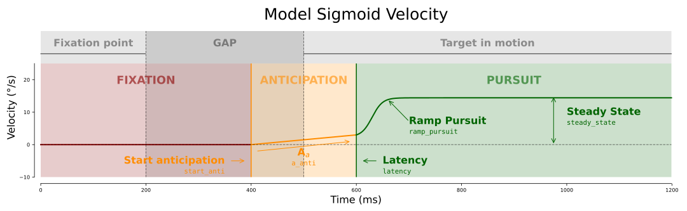

Velocity sigmo¶
- Model.SmoothPursuit.velocity_sigmo(x, dir_target, start_anti, a_anti, latency, ramp_pursuit, steady_state, do_whitening)[source]
Model reproducing the velocity of the eye during the smooth pursuit of a moving target
This model includes different parts:
FIXATION- corresponding to a fixation of the eye on a fixation pointANTICIPATION- corresponding to an anticipatory movement of the eye before the moving target appearsPURSUIT- corresponding to the movement of the eye when tracking a moving target. This part corresponds to an sigmoid whose function is: \(\mathtt{velocity = \ \frac{{\color{darkred}\text{steady_state}}} \ {1 + e^{t \cdot {\color{darkred}\text{ramp_pursuit}}}}}\)
- Parameters
x (ndarray) – Time of the function
dir_target (int) – Direction of the target -1 or 1
start_anti (int) – Time when anticipation begins
a_anti (float) – Acceleration of anticipation in deg/(s**2)
latency (int) – Time when the movement begins
ramp_pursuit (float) – Curve of the pursuit
steady_state (float) – Steady_state velocity reached during the pursuit
do_whitening (bool) – If
Truereturn the whitened velocity
- Returns
velocity (list) – Velocity of the eye in deg/sec

In order to see the modifications of the model caused by the changes in the different parameters, feel free to play with the sliders:
Test the parameters¶
example of code: test the parameters of the function to the velocity of the eye de-saccade in deg/sec (see remove saccades from the velocity data in deg/sec).
[1]:
import ANEMO
Processing = ANEMO.ProcessingSmoothPursuit(dirpath='dataANEMO', sub='002')
#------------------------------------------------------------------------------
# Parameters:
#------------------------------------------------------------------------------
xname = 'vx_NaN' # The velocity of the eye de-saccade in deg/sec
trial = 8 # Number of the trial to be transformed
expname = 'sub-002_task-aSPEM' # Name of the particular experience to be
# transformed
# or list(PreProcessing.data.keys())[0]
model = ANEMO.Model.SmoothPursuit.velocity_sigmo # model equation
# Function generating parameters to perform the fitting
generate_params = ANEMO.GenerateParams.SmoothPursuit
stime = None # Start time of the fitting
etime = -280 # End time of the fitting
step_fit = 2 # Number of steps for the fit
# Dictionary containing the parameters for the generate_params function
arg_generate_params = dict(eventName_TargetOn='TargetOn',
eventName_StimulusOff='StimulusOff',
eventName_dir_target='dir_target',
do_whitening=False)
toxname = None # Name of the data to be saved
return_ = True # If True returns the value, else saves it in results and data
#------------------------------------------------------------------------------
# to apply the function:
#------------------------------------------------------------------------------
Fit = Processing.Trial.Fit(xname,
trial,
expname,
model,
generate_params,
stime,
etime,
step_fit,
arg_generate_params,
toxname,
return_)
print(Fit)
#------------------------------------------------------------------------------
# to retrieve the raw data:
#------------------------------------------------------------------------------
data_exp = Processing.data[expname]
data = data_exp.Data
vx_NaN = data[data.trial==trial][xname].values
#------------------------------------------------------------------------------
# Plot:
#------------------------------------------------------------------------------
import matplotlib.pyplot as plt
fig, axs = plt.subplots(1,1, figsize=(10/2, 10/(1.681*2)))
axs.plot(vx_NaN, 'k', alpha=.5, label='vx_NaN')
axs.plot(Fit['fit'], 'r', label='fit')
axs.set_xlabel('time (ms)')
axs.set_ylabel('velocity of the eye (°/s)')
axs.legend()
plt.tight_layout()
plt.show()
{'values_fit': {'dir_target': 1.0, 'start_anti': 1000.3030718055629, 'a_anti': 0.06565369235506324, 'latency': 1052.0000030737199, 'steady_state': 15.870437366358617, 'do_whitening': False, 'ramp_pursuit': 41.99469707310046}, 'FitStatistics': {'nfev': 746, 'chisqr': 31157.414401320737, 'redchi': 22.003823729746284, 'aic': 4397.609465630429, 'bic': 4423.905046270915}, 'fit': array([ 0., 0., 0., ..., nan, nan, nan])}
Run it on a data set¶
example of code: run this function on the full data of velocity of the eye de-saccade in deg/sec (see remove saccades from the velocity data in deg/sec).
[2]:
import ANEMO
Processing = ANEMO.ProcessingSmoothPursuit(dirpath='dataANEMO', sub='002')
#------------------------------------------------------------------------------
# Parameters:
#------------------------------------------------------------------------------
xname = 'vx_NaN' # The velocity of the eye de-saccade in deg/sec
model = ANEMO.Model.SmoothPursuit.velocity_sigmo # Model equation
# Function generating parameters to perform the fitting
generate_params = ANEMO.GenerateParams.SmoothPursuit
stime = None # Start time of the fitting
etime = -280 # End time of the fitting
step_fit = 2 # Number of steps for the fit
# Dictionary containing the parameters for the generate_params function
arg_generate_params = dict(eventName_TargetOn='TargetOn',
eventName_StimulusOff='StimulusOff',
eventName_dir_target='dir_target',
do_whitening=False)
toxname = None # Name of the data to be saved
expnames = 'sub-002_task-aSPEM' # Name of the particular experience to be
# transformed
# or list(PreProcessing.data.keys())[0]
trials = trials = list(range(1, 16)) # List of the trial to be transformed
recalculate = False # Allows you to indicate if you want to force the
# calculation on the trials already processed
#------------------------------------------------------------------------------
# to apply the function:
#------------------------------------------------------------------------------
Processing.Data.Fit(xname,
model,
generate_params,
stime,
etime,
step_fit,
arg_generate_params,
toxname,
expnames,
trials,
recalculate)
calculates Fit_velocity_sigmo from the file sub-002_task-aSPEM... finished